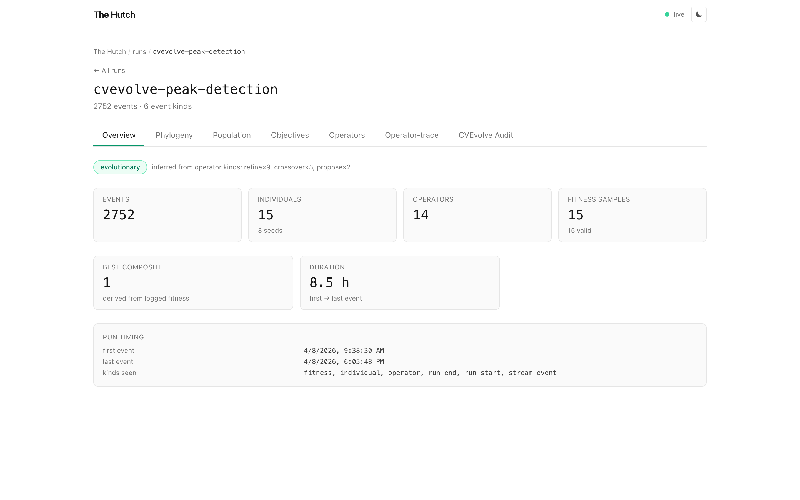
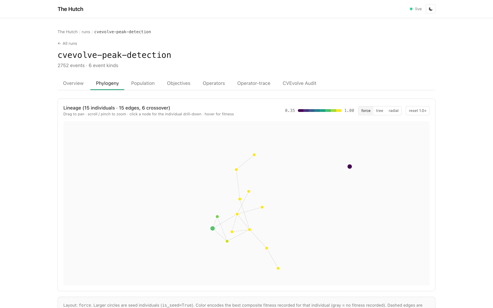
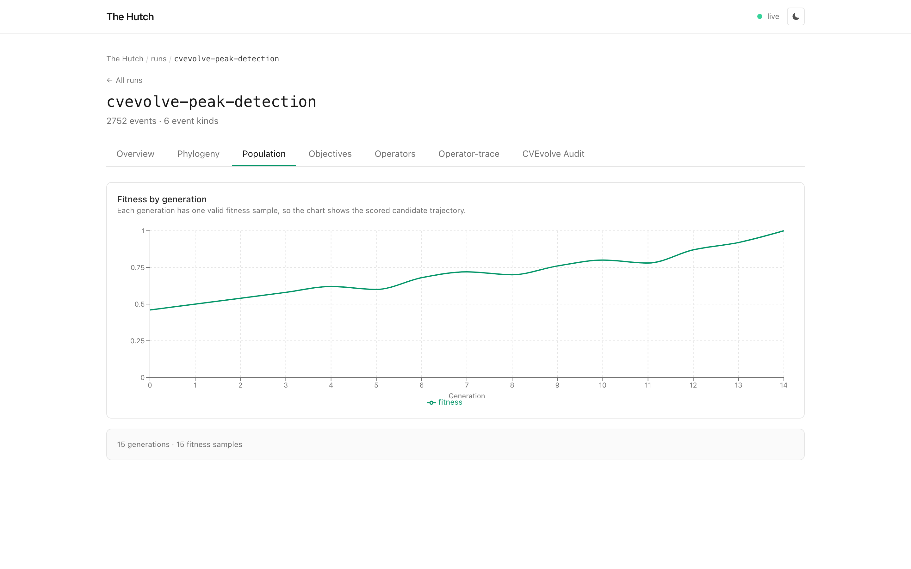
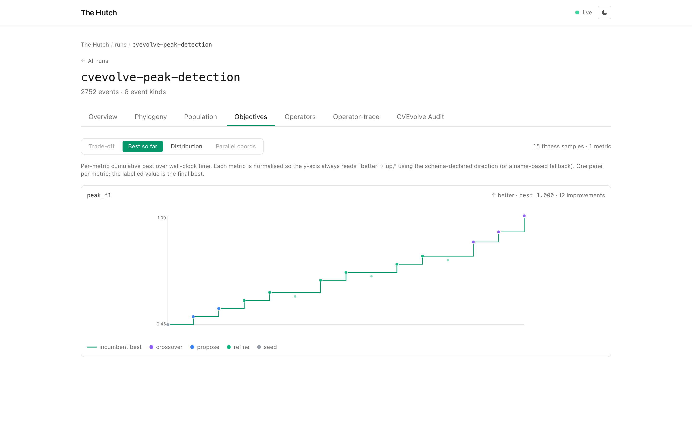
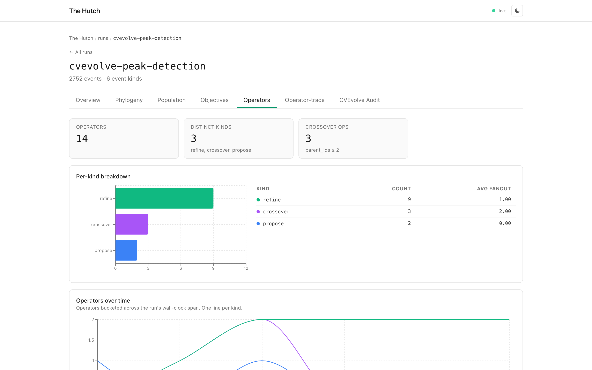
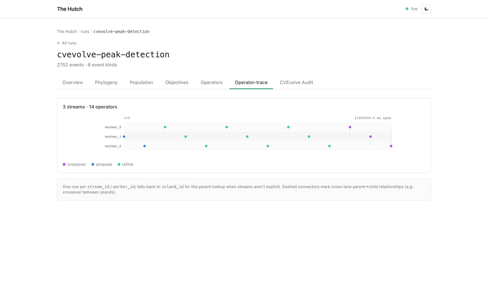
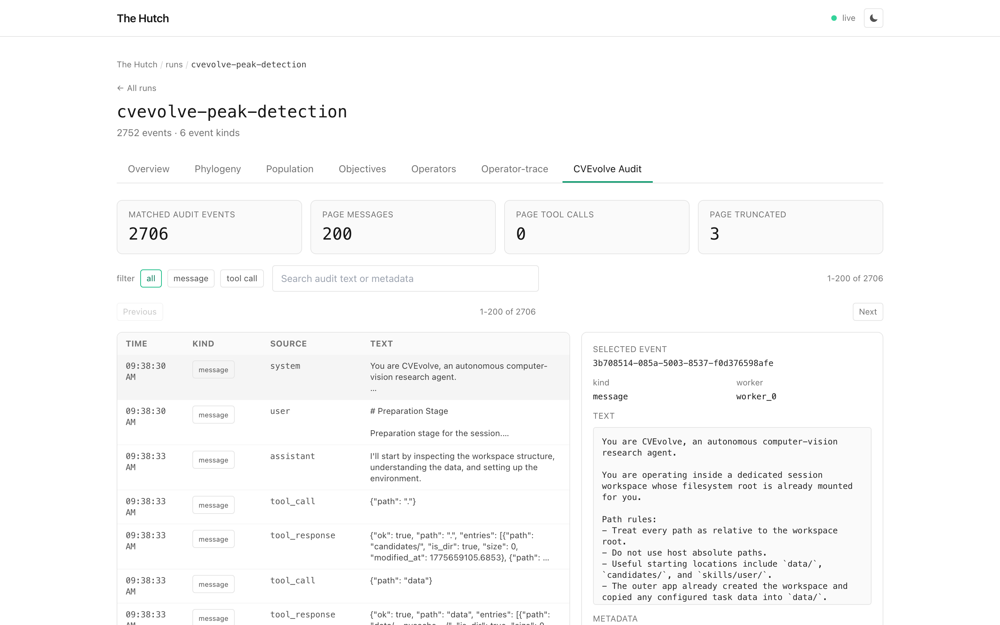
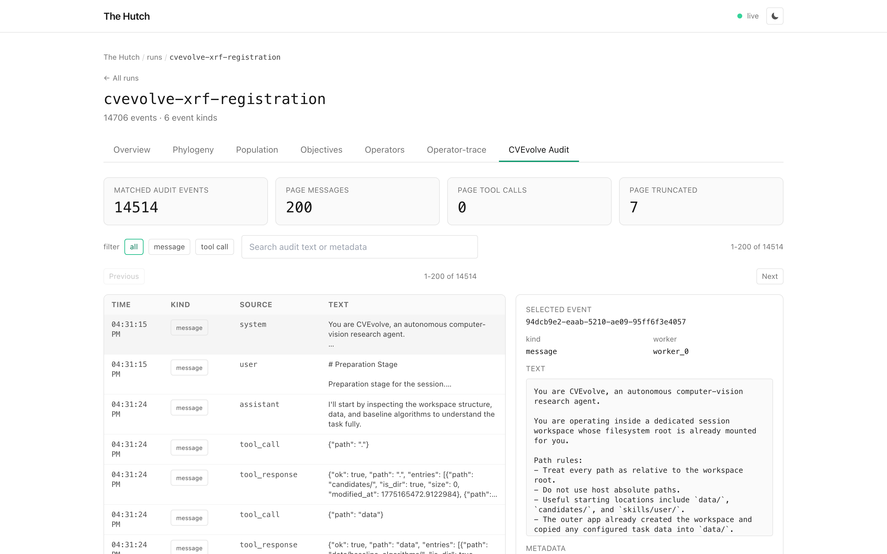

CVEvolve in Hutch: live runs, lineage, and audit logs¶
v0.1.1, May 11, 2026
Today we're adding first-class CVEvolve support to Hutch. Point Hutch at
a CVEvolve session root, or directly at history/search_history.sqlite,
and the dashboard turns the run into the same canonical event stream as
the rest of Hutch: Individuals, Operators, Fitness, lineage, and
optional audit logs.
That means CVEvolve runs no longer have to be inspected through terminal scrollback or raw SQLite queries. You can watch the search while it is active, see what kind of operator produced each candidate, follow the parent graph, and open the prompt/tool-call audit trail only when you need it.
Watch or import¶
For a running session, use hutch watch:
Hutch polls CVEvolve's history database and writes only new events. The
run appears as running until session_state.phase becomes
completed; then Hutch emits the terminal run_end.
For a finished session, use the regular importer:
Audit logs are opt-in because they can be large. Add --include-audit
when you want CVEvolve's message and tool-call records in the dashboard:
A real run in the dashboard¶
The screenshots below use a CVEvolve peak-detection session. The Overview tab is meant to answer the first questions a researcher asks when opening a run: how many candidates were explored, which search operators were used, how much fitness evidence exists, and how the run evolved over time.

The overview is intentionally focused: counts, fitness, lineage evidence, and timing are visible before you move into the detailed tabs.The tab bar follows the evidence Hutch imported from this run: lineage, population progress, objective history, operator summaries, operator timelines, and the optional CVEvolve audit log.
What gets mapped¶
The adapter reads CVEvolve's SQLite history directly:
| CVEvolve source | Hutch event |
|---|---|
candidates |
individual |
parent_ids_json |
lineage edges |
candidate action |
operator (propose, refine, mutate, crossover) |
metrics |
primary/secondary fitness |
holdout_test_metrics |
holdout fitness |
candidate_failures |
stream_event with label candidate_failure |
messages.sqlite / tool_calls.sqlite |
opt-in audit stream_events |
CVEvolve metric directions are preserved. A maximize metric becomes
Hutch higher; a minimize metric becomes lower, with composite
scores normalized so the dashboard still has one higher-is-better
aggregate for comparison.
The Phylogeny tab is built from CVEvolve's parent IDs. It is not guessing lineage from log order.

The graph follows CVEvolve candidate IDs and parent IDs, including tune and crossover edges.The Population tab turns fitness events into a generation-by-generation trajectory. For this run, the search logs one scored candidate per generation, so Hutch shows a single candidate trajectory instead of a population spread.

The population view shows the peak-detection score rising across 15 generations and 15 fitness samples.The Objectives tab keeps the metric name and direction visible. In the
peak-detection run, peak_f1 is the primary objective, so the best-so-far
view is the clearest way to read progress. The staircase tracks the
incumbent best value, while the colored dots show every evaluated
candidate by operator type.

The objective history shows the cumulative bestpeak_f1 value and the
proposals, refinements, and crossovers that produced each score.
The Operators tab shows how the search moved. In this peak-detection run, Hutch can distinguish generated proposals, refinements, and crossover-produced candidates rather than flattening everything into a single candidate list.

CVEvolve actions become canonical Hutch operators, so the search policy is visible at a glance.The Operator-trace tab adds timing and worker lanes. That makes it easier to see when proposals, refinements, and crossovers happened, and which worker produced each candidate.

The operator trace lays out 14 operators across three worker streams, with crossover events shown as their own operator type.Audit logs without loading the whole trace¶
CVEvolve audit logs are useful when you need to understand what the agent saw or which tool call produced a result. They can also be much larger than the candidate history, so Hutch leaves them out by default.
When you import with --include-audit, the dashboard reads audit rows
through a paged endpoint:
The CVEvolve Audit tab asks the daemon for one bounded page at a time. Filtering by message/tool-call label and searching audit text also happen server-side.

The peak-detection run has 2,706 audit events; the UI is showing the first 200.The same path scales to larger traces. The XRF registration run below has 14,514 matched audit messages, but the browser still requests one page, not the whole audit table.

The XRF run is a larger audit-trace check: 14,514 matched events, paged server-side.Two ways to integrate¶
There are two useful paths:
- Hutch-side polling. Use
hutch watchon an existing CVEvolve session. No CVEvolve code changes are required. - Native CVEvolve tracking. Enable CVEvolve's Hutch integration when you want lower-latency SDK events from inside the run.
Both paths use deterministic event IDs, so restarting a watcher does not duplicate the event log. For long-running sessions, you can also pin the watch checkpoint explicitly:
hutch watch /path/to/session \
--format cvevolve \
--watch-state ~/.hutch/watch-state/my-cvevolve-run.json
Try it¶
Add audit only when you need it:
The goal is simple: CVEvolve should be legible while it is running and auditable after it finishes. Hutch keeps the dashboard focused on the evidence available for each run, so a small run stays readable and a large audit trace stays navigable.